A Garden For All Seasons
Forget those blanched, out-of season tomatoes and wilted, travel-weary heads of lettuce lining your grocery store shelves. Whether you live in Maine, Montana, Mississippi, you can reap fresh produce straight from the garden year-round. Let planting guru Eliot Coleman show you how to beat the seasons.
February/March 2000
Issue # 178 - February/March 2000
A Garden For All Seasons
Gardening on the back side of the calendar
by Eliot Coleman
Like most fresh homegrown vegetable enthusiasts, I have never wanted the garden to end. That doesn't mean I longed for an endless summer; I love the pleasures of fall, winter and spring. I just wanted year-round, freshly harvested food on the table. Somehow I always knew there had to be a simple way to combine cold-hardy crops with a little climatic protection during the colder times of the year. I am delighted to report that the results of 20 some years tinkering with this idea have proven me right. But first, some background on now it all came about.
I was inspired to turn my winter gardening dream into reality back in 1981, when I took on the job of farm manager at a private .school in Vermont that grew most of its own food. In addition to rigorous academic studies, the school stressed practical experience on its farm as part and parcel of a student's education. But at the time I arrived, the reality of the farm experience for the students was mostly limited to livestock care. From the end of fall vegetable harvest in early October - when canning, freezing and the stocking of the root cellar were completed - until the start of spring planting in May, there was no production of fresh garden vegetables. I was convinced we could engage both the minds and stomachs of the students more effectively if they had more hands-on garden experience.
I would, however, be working against historical fact. The school year was originally designed so students would be in school only during the cold winter months (nongrowing season) and would be available to work on the family farm during the summer, when many hand, were needed to help with the crops. Although this traditional schedule is modified slightly in some areas (such as in the potato-growing districts of northern Maine, where some schools still open in August and then recess for the potato harvest in September), it is too well established everywhere else to think of changing it. If I wanted the students to grow fresh vegetables, they would have to do it during the school year.
I was determined that it should be a serious, productive effort. I had little interest in providing a gardening experience that merely focused on protecting warm-season crops against frosts for a few struggling, unsatisfactory weeks into the fall. Nor did I wish to limit our production to the traditional hardy leftovers of the summer season. I was keenly aware that if teen-agers were to be inspired, the effort would need more charisma than a field o Brussels sprouts. But budget constraint, dictated that a large, heated greenhouse was out of the question. So my first choice was the cold frame. It has always been the simplest and least expensive climate moderator for the gardener of limited resources. Years ago, on a trip to Europe, I had seen large-scale commercial production of hardy winter vegetables in cold frames. And even though cold frames are no longer considered commercially viable, that matters little in a school or home garden setting where there's free land, free labor and where the spirit of hands-on group effort gets the job done.
Thus I set about devising a cold frame from which we could harvest all winter. I wasn't interested in highly technological modifications. Buried foam insulation, awkward reflective covers and space-age materials are not my style. I have a prejudice that simpler is better, especially when simpler has been time-tested. I knew that comparative investigations of different cold frame designs back in the 1970s showed the standard old-time model - a bottomless box made of two-inch thick planks, 12 inches high at the back and 8 inches high at the front and covered with glass panels - was still the best. So I copied the classic Dutch cold frame design I had seen many years before and that took care of technology. The next step was biology, the selection of the crops.
The vegetables that we canned at the school, mostly pickles and tomato paste, and those we froze - beans, broccoli, cauliflower, corn, eggplant, peas, peppers, zucchini - were principally the crops of summer. Most are "chilling sensitive," which is to say they do not appreciate temperatures below 50°F. For winter harvesting we had to focus on their less popular "chilling resistant" compatriots. Many of these can survive winter's freezes as long as they have some protection.
Spinach was an obvious choice. So was the Asian crop, tatsoi. These are both highly nutritious greens that thrive in cold weather. I had often seen scallions and Swiss chard last well into the winter even in an unprotected outdoor garden. They were a great success in the cold frames, as were baby carrots planted on August 1 and covered in the fall. The carrots could be pulled all winter, and the cold soil storage made them as sweet as sugar. Vitamin-rich dandelions and turnip greens also made the cut.
That took care of some main crops; salad was next. Two salad crops I had seen in the European cold frames were claytonia, which farmers there called winter purslane, and mache, also called corn salad. Longtime staples of continental winter salads, these are two of the hardiest crops I know. Other strong choices are endive and escarole, as well as a cultivated Italian weed called minutina, known in English as buckhorn plantain. Heads of lettuce turned to mush after the weather got really cold, but we noticed that the leaves of young lettuce were very hardy. So we started harvesting lettuce and a number of other greens - including arugula, mustard greens and sorrela - as baby leaves on a cut-and-come-again basis to make a mixed-leaf or mesclun salad. Cutting salad leaves young worked so well that we soon used that style of harvest for all of our winter salads.
Our simple cold frame garden gave all these plants quite a lot of protection against the cold. On average, growing plants in a cold frame is equivalent to moving them to a climate one and a half USDA zones warmer, or about 500 miles to the south here on the east coast. A cold frame will usually protect the crops inside from freezing until the outdoor temperature goes below 25°F. As our fall went on and temperatures got well below freezing, we noticed a little host damage on the leaves of some of the crops but nothing major. As long as we postponed the daily harvest until the sun warmed the temperature inside the cold frame to above freezing (even the weak sun of a cloudy day worked well enough), the plants would thaw naturally with their roots in the ground and all was well. Still, there was much colder weather yet to come and we wondered how far into the Vermont winter we could continue the harvest. Moreover, would we be able to dig out the frames when the heavy snows arrived?
Dressing in layers
At this point I remembered an interesting fact I had observed earlier. If the same crop was growing both inside and outside the cold frame, the outside crop suffered greatly from the dry, cold, late fall winds, even when temperatures were not below freezing. It seemed as if one major virtue of the cold frame was that it provided a windbreak. Well, I thought, when the weather outside gets too cold for us to be comfortable in just a windbreaker, we put a sweater on underneath. What if we added a second layer of protection for our plants? I had noticed a few years earlier, when I had stored an empty cold frame in an unheated, plastic-covered tunnel greenhouse, that the soil inside the frame hardly haze, even in the depths of winter. So we built a simple plastic-covered hoop-house over the cold frames and bingo! The great leap forward! Our plants moved another 500 miles to the south and had a snow-shedding roof over them to hoot.
It is fascinating how one step forward will suddenly help focus your thinking about a new project. This was one of those steps. First, the simplicity of adding a second layer made us understand better what we were achieving.We were not doing battle with the cold of winter, as one thinks of doing in a heated greenhouse while trying to grow hot-weather crops, but rather we were creating a simple protected microclimate, sufficient for the needs of our hardy plants. It was like the difference between sitting inside by the fire on a cold day or being outside with enough layers of clothes on to keep you comfortable. Second, we began to pay attention to the fact that once past the middle of November most of the crops were not growing much anymore. They were just sort of hibernating and waiting for us to come and harvest them. 1n other words, we were not actually extending the growing season as you would with a heated greenhouse, we were extending the harvest season.
Those realizations really helped turn the corner on developing this concept. It was obvious that some of our crops were too small to he harvestable and some were too large to be as hardy as they might be for the winter days yet to come. I had guessed at the planting dates and I hadn't done too badly for a first try, but a lot more experimentation would be necessary in future years to come up with the ideal September and October planting schedule for a really productive winter harvest over time, we would also find that some of the crops did well with two, three and even more successive planting dates. This allowed us to better spread out the harvest and take advantage of what slow growth did take place between mid-November and early February, ensuring us plenty to reap later in the year.
From that early beginning, the winter harvest concept blossomed. A few years' experience gave me more precise knowledge about planting dates and improved timing for adding the layers of protection. I devised a number of basic systems for moving small, plastic-covered tunnel greenhouses between two alternate sites. One design had wooden skids sliding on wooden rails, another had runners on the ground like a sled and a third had rails on the bottom of the structure and rolled on ball casters set in support posts. With a movable greenhouse, the crops could be planted out of doors starting in the early fall and then progressively covered with cold frames and finally the greenhouse.
This helped avoid the pest, disease and soil nutrient problems often associated with permanent greenhouses. Plus, the uncovered area grew a soil-improving green manure, which we turned under before moving everything back to the original site the next fall.
Eliot's wife, Barbara Damrosch, harvesting on a luminous day.
Lessons in Latitudes
By 1990, when I left the job at the school to move back to my farm in Maine. enough people had heard about this "new" idea to bring out the naysayers. "You can't do that," they would say. "You may be able to give protection from cold but there isn't enough winter light for plants in New England. You need to be somewhere like the south of France if you plan to garden all winter."
Well, I've long been aware of the importance of light for plants. The key role of the sun for winter gardening was emphasized in an article I had read in a British gardening magazine. We associate Britain with the mild temperatures that make it in most respects a gardener's dream. But the author noted with a sense of resignation that despite the moist, temperate British winter climate, the short winter day length was an enormous obstacle to winter vegetable growing. Britain, he noted, is located "up there with the polar bears."
Polar bears? What does Great Britain have in common with polar bear country? As it turns out, quite a lot.
Take a quick look at a world atlas. You'll notice the southern tip of Great Britain sits just above the 50th parallel of latitude. If you follow that parallel across Europe to Asia and then to North America, you'll see it runs through cities we would consider the far north: Kiev, Ukraine; Ulaan Goom, Mongolia; Moose Jaw, Saskatchewan; Seal Cove, Newfoundland. All of those places are some 70 miles farther north than the U.S./Canadian border; which follows the 49th parallel of latitude. If you go a few hundred miles even farther north to the heartland of Britain, you will be on the 54th parallel, which is the same latitude as Great Whale River, Quebec, on the shores of the icy Hudson Bay. Thus, an English vegetable gardener tilling a plot near Leeds or Manchester would experience the exact same winter day length as would a polar bear fishing in Hudson Bay. They are on the same "sun line," so to speak
But the School in Vermont and my farm in Maine are not on a polar bear latitude. We are on the 44th parallel, the same latitude as Eugene, Oregon, and Oshkosh, Wisconsin. Across the Atlantic Ocean, believe it or not, the 44th parallel passes through the south of France and the Ligurian coast of Italy on the sunny Mediterranean. In other words, by being on the same latitude, we have the same day length and the same amount of winter sun as those solar paradises. I visited growers in southern France one January and none of the horne or market gardeners I interviewed complained about inadequate sun. They all complained about the cold.
What was cold to those French gardeners, a January average temperature of 40°F to 45°F, seems mild to us here, where the January average temperature is 20°F. Our colder temperatures probably explain why U.S. gardeners have never taken advantage of the adequate sun. Well, the double coverage of unheated greenhouse and an inner layer, combined with hardy crops, had solved the cold problem. And since we have as much sun as the south of France I wanted to see if I could use these resources to do what the French market gardeners had been doing for years: I wanted to grow cow mercial vegetable crops all winter long.
The Commercial Winter Garden
If I was going to grow winter crops commercially, I had to find a less expensive and more efficient inner layer than the cold frames of the prototype system. Cold frames are labor intensive to build and need to be manually vented so they wont overheat on sunny days. I ran trial using as inner layers various floating row cover materials held a foot above the soil on wire wickets. Although they did not provide quite as much climatic protection as the cold frames, they were self-venting, lighter in weight, easier to place over or take off the crops and much less expensive. My wife, Barbara, and I now use row covers rather than cold frames in our home garden system as well.
Similarly, 1 knew I wanted to grow in larger greenhouses and decided upon 30-foot wide by 100-foot long houses as the most efficient choice. I had never moved greenhouses that large before, but by using my earlier galvanized runner design, we were able to devise greenhouses that can be moved quite easily with a tractor (we pull them as if they were large sleds) and can be bolted securely to ground anchors when they are in place. We have also built one stationary greenhouse with a concrete floor at one end, where we wash and pack the winter-grown produce. That way we get to work in the warm, bright sun on any pleasant winter day and can take the edge off the chill with a small heater on days when it's cloudy
Mondays and Thursdays are harvest days. We carefully wash all produce in tested deep-well water before sorting anal packing carefully into our homemade native cedar boxes with our trademark "Seasonal Salads" branded into both end, The stores and restaurants return the empty ty boxes to us when we arrive with the next order. We wash them in hot water and they are ready to use again. Our major crops are out baby leaf salad mix, freshly pulled winter carrots, spinach turnips and turnip greens, leeks, radishes, scallions, tatsoi and extra curly baby new potatoes in spring. We also grow storage crops like beers and celeriac in outdoor fields over the summer for storage in our root cellar and delivery over winter along with the fresh produce.
At the start of our foray into commercial winter vegetable production in unheated greenhouses, we boldly declared that we wanted to be the "backwards farm." We would produce salads and main course vegetables from October 1 to May 31 and then take a long summer vacation. It's amazing how close to that prediction we came. We do have an eight month, October to May, harvest season but our vacation time is limited to half of June and half of July before we have to get back to work preparing everything for the season to come. Still, we have no complaints. We're having a ball and the response from our customers is the most gratifying in all my years as a professional grower. People love the idea of having really fresh winter food harvested either that day or the day before on a local farm, instead of the usual week-old winter produce from faraway places.
Back to the Home Garden
In all of our fascination with the commercial potential of this idea, we haven't forgotten our home greenhouse. However, since we have easy access to our commercial crops, we now follow a simplified cropping program at home. We plant mostly the crops that we want to have on hand for a quick meal, especially if we get home after the sun is down and everything is frozen up. Both mache and tatsoi can be harvested when frozen solid and look perfectly normal after they thaw. So can scallions and leeks and, of course, our sweet baby carrots, which are hiding in the soil. Spinach and parsley will also recover adequately from being harvested frozen.
At whatever level you get involved in the winter harvest, you will discover some of the best food and easiest gardening you have ever experienced. Remember, the winter work is mostly harvesting. All our winter crops were planted during what we now call the "second spring," September and October. Furthermore, there are almost no weeds, the pests have all left for warmer climes, and there is no watering because evaporation is low and the soil groundwater table is high. As crops are harvested and empty spaces appear in our home greenhouse, we sow more seeds whenever the spirit moves us. This gives a wonderful sense of the home garden as an ongoing process or cycle, not the start-and-stop operation it was when we were just summer gardeners. We are forever released from the madness of canning and freezing that once overtook us each fall. And remember, we are doing this in Maine. Over 85% of the United States is farther south than we are and has more sun and warmer winter weather.
From fall through spring the amount of variety available from the winter harvest depends on where you live and the severity of your winter weather. Row covers, hardy vegetables and a succession of fall planting dates is probably all zone 9 and 10 gardeners need. In zones 7 and 8, a cold frame alone will guarantee bounteous harvests, but a simple two-layer system will be even better. For zone 5 and 6 gardeners, the double coverage of inner and outer layers will bring daily harvests that will both amaze and delight. In the frigid mountains of Vermont (zone 3) even the double-covered crops may get beat up a bit during the coldest weather, but will bounce back vigorously as winter recedes. So give it a try next winter. Start planting during the "second spring" and enjoy the freshest winter food you have ever eaten.
SOURCES
The Cooks Garden. RC. Box 5010 Hodges, SC 29653-5010 (800) 457-9703 st6.yahoo.com/cooksgarden/
Johnny's Selected Seeds, Foss Hill Road Albion, ME 04910 (207) 437-4301 www.johnnyseeds.com
Shepherd's Garden Seeds, 30 Irene Street Torrington, CT 06790-6658 (860) 482-3638 www.shepherdseeds.com
For more information and greater de tail, consult Eliot Coleman's hook for home gardeners, Four Season Harvest, available through Mothers Bookshelf, (800) 888-9098 (MEB #140, $24.95). Cornmercial growers will want a copy of The Winter Harvest Manual, availablefor$15 postpaid from: Four Season Farm, 587 Weir Cove Road, Harborside, ME 04642.
 Above: Barbara and Eliot's home greenhouse, where it all began. The couple has since turned their four-season harvest concept into a commercial enterprise, much to the delight of local restaurants and markets. Of late, these retailers have shown special interest in fresh carrots, tasty minutina and ready-to-eat radishes. |
 Growing salad greens has been a labor of love for Eliot. Wild arugula (middle photo), along with beet leaves,`````````````````` endive and the occasional oak leaf and rouge d'Hiver lettuce, make for a swinging salad. |
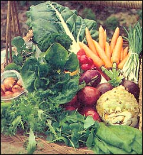 Moving an early prototype mobile greenhouse over some fall plantings as thetemperature drops. |
|
Eliot harvests some cold-weather lettuce. Salad greens are a major crop on this four season farm. |
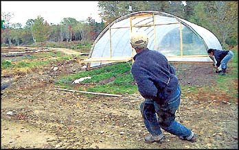 Greens under remay. Just this simple measure will give sensitive greens protection from the cold. |
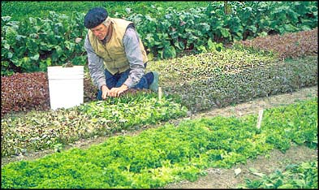 The greatness of greenhouse farming is that a vacation from the chili is just a pathway from your door. |
|
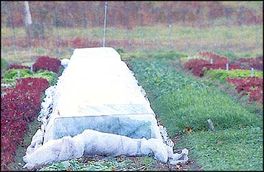 There are times when even the greenhouse becomes too cold. Remay covers come to the rescue. |
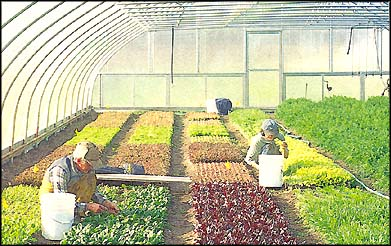 Even in the dead of winter, it's warm enough in the greenhouse workshop to start seeds. |
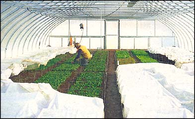 Four-season harvesting has been a boon to home and wallet alike, but most important, says Eliot, is that ""we're having a ball... and the response from our customers is the most gratifying in all my years as a professional grower."" |
|
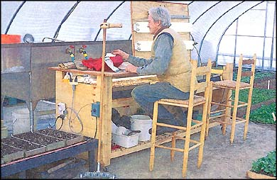 Above: The delicate process of harvesting mache. Below: The promise of summer calls year-round. |
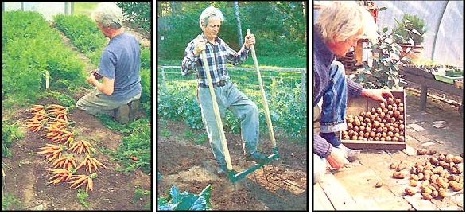 |
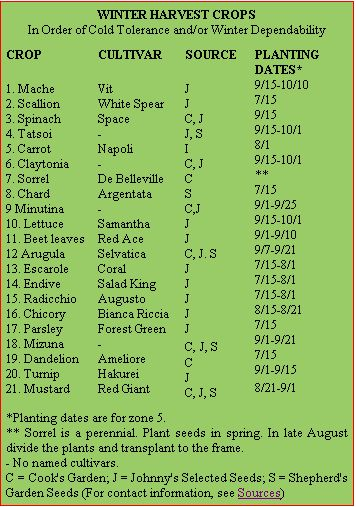 |
|
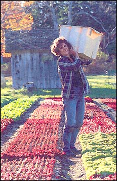 |
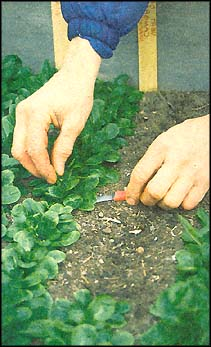 |
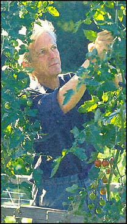 |